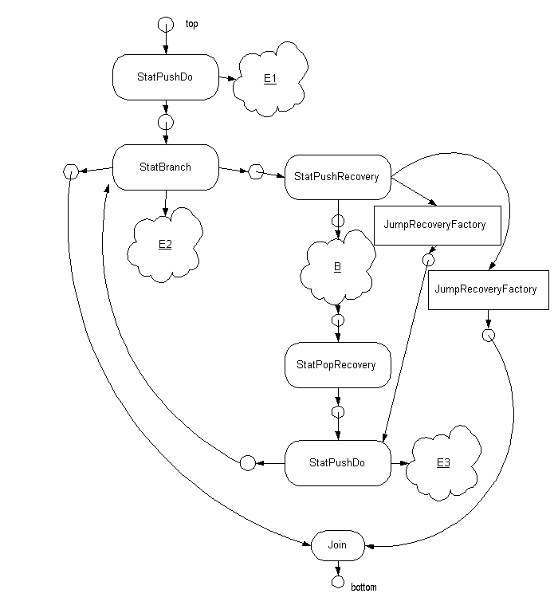

Figure 1
Figure 1Java has a concept of abrupt completion. When a statement completes it either completes "normally" or "abruptly". Abrupt completion happens for the following "reasons": an exception being thrown, a break statement being executed, a continue statement being executed, or a return statement being executed.
Making life more interesting is Java's "finally" construct. A "finally" clause may appear at the end of a "try" statement and specifies a block of statements that must be executed after the rest of the try statement has executed (that is the try block and its associated catch blocks) regardless of whether they complete normally. If the finally block completes normally then the try statement completes with the same status as the preceding try-catch parts. If the finally block completes abruptly for some reason then the try statement completes for the same reason.
Here is a somewhat contrived example.
try {
foo() ;
continue ;}
catch( NullPointerException e ) {
break outer; }
catch( IllegalArgumentException e ) {
}
finally {
bar() ; }
baz() ;
First assuming that bar() does not throw any exceptions: If foo throws no exception, bar() is executed and the try completes abruptly by reason of "continue". If foo() throws a NullPointerException, then bar() is executed and the "try" completes abruptly by reason of "break outer". If foo() throws an IllegalArgumentException, then bar() is called and the "try" completes normally (and only in this case is baz() then executed). If foo() throws any other exception, then bar() is executed and the "try" completes by reason of the unhandled exception. In any of these cases, if bar() ends abruptly for some reason, then the try ends abruptly for that same reason -- the completion status of the try-catch part being overwritten, in a sense.
As the above example shows, the treatment of break, continue, and return in Java is similar to the treatment of "throw" in that processing of them may need to be suspended in order to execute pending "finally" clauses, and an exception thrown in these finally clauses will take precedence over a suspended break, continue, or return.
During processing of a finally clause, the current reason for abrupt completion must be recorded. Consider:
try {
try {
if( x ) throw new A() ; }
finally {
P } }
catch( A e ) { Q }
catch( B e ) { R }
At the end of the finally clause, either the exception is rethrown (if x was true) or it is not.
To implement this we use a stack of completion reasons. When the finally clause is entered, a reason is pushed. When the finally clause is exitted, the completion reason is popped. The reason is "normal" if the finally is entered owing to normal completion of the try clause or one of its catch clauses. The reason is an abrupt completion status when the finally is entered because of an abrupt completion. At the end of the finally clause, the stack is popped. If the popped status was abrupt it is rethrown; if the completion is normal, then the next statement is selected.
The need for a stack is illustrated by the following example. x and y are both true. It prints out the numbers from 0 to 7 and nothing else. The changes to the status stack are shown in comments.
public static void main(String[] args) throws A {
try { // (a)
System.out.println(0) ;
if( x ) throw new A() ; }
finally { // (a) Status := A
try { // (b)
System.out.println(1) ; }
finally { // (b) Status := normal, A
try { // (c)
try { // (d)
System.out.println(2) ;
if( y ) throw new B() ;
System.out.println("X") ; }
finally { // (d) Status := B, normal, A
System.out.println(3) ;
} // (d) Status := normal, A
System.out.println("Y") ; }
catch(B e ) { // (c)
System.out.println(4); }
finally { // (c) Status := normal, normal, A
System.out.println(5);
} // (c) Status := normal, A
System.out.println(6) ;
} // (b) Status := A
System.out.println(7);
} // (a) Status := empty
System.out.println("Z");
}
The virtual machine will maintain a stack of "Recovery" objects, kept in groups. Each recovery object is capable of handling a set of abrupt completion events. At the start of a "try" statement a "FinallyRecovery" object is pushed (in a group of its own) and then a group of "CatchRecovery" objects are pushed, each corresponding to a "catch" clause of the "try". At the start of a loop, a group of two recovery objects is pushed, both of class "JunpRecovery". At the start of a "switch" statement, an object of class "JumpRecovery" is pushed. At the start of a function, a JumpRecovery is pushed.
On abrupt completion, the stack is searched for a Recovery object capable of handling the "Reason" for the abrupt completion. FinallyRecovery objects claim to be capable of handling any reason. The virtual machine and the Recovery object then handle the abrupt completion. Typically handling consists of adjusting the various stacks in the virtual machine state ---e.g. the recovery stack (removing groups up to and including the one containing the chosen Recovery object), the evaluation stack, the variable stack--- and then transferring control to a statement node within the new top evaluation. The action for the FinallyRecovery object also has to push the completion reason on the stashedCompletionStatusStack.
Although Recovery groups are popped on abrupt completion, we also need to make sure that recovery groups are popped at appropriate times on normal completion of statements. For example, when the "try-block" of a "try" statement completes normally, the Recovery groups pushed at the start of the block must be popped.
This section introduces the new statement nodes associated with exception handling. The use of these in code generation is discussed later.
We need new statement nodes to deal with managing the Recovery object stack. We also need classes representing Recovery objects and representing reasons for abrupt completion. These will be properly documented in the documentation for CLC or JavaLang as appropriate, eventually. StatPushRecovery pushes a group of Recovery objects.
class StatPushRecovery extends StatementNd {
public StatPushRecovery( SourceCoords coords, int varDepth )
public void addRecovery( RecoveryFactory r ) ;
public StatementNodeLink next() ;
...
}
The construction of RecoveryFactory objects is discussed later.
For representing catch clauses, the Recovery objects should be added
in the order that the corresponding catches appear in the program text.
StatPopRecovery pops the top group of Recovery objects.
class StatPopRecovery extends StatementNd {
public StatPopRecovery( SourceCoords coords, int varDepth )
public StatementNodeLink next() ;
...
}
At the end of a "finally" clause, the top stashed completion status has to
be accessed and acted on. This is done by a StatEndFinally
class StatEndFinally extends StatementNd {
public StatEndFinally( SourceCoords coords, int varDepth )
public StatementNodeLink next() ;
...
}
It is also useful to record entry into a finally block by normal
completion of the preceding try block or catch blocks. For this we
use a StatStartFinally. It pushes null on to the stashedCompletionStatusStack,
representing a normal completion status.
class StatStartFinally extends StatementNd {
public StatStartFinally( SourceCoords coords, int varDepth )
public StatementNodeLink next() ;
...
}
To initiate abrupt completion, we have
class StatThrow extends StatementNd {
public StatThrow( SourceCoords coords, int varDepth, ExpressionNode e )
...
}
where the ExpressionNode, e, specifies the object to be thrown, and
class StatJump extends StatementNd {
public StatJump( SourceCoords coords, int varDepth, Object r )
...
}
The Object parameter in the constructor should equal (using equals)
the Object used in constructing the corresponding RecoveryFactory object
(see below).
Recovery objects are created by RecoveryFactory Objects at run time when a StatPushRecovery node is stepped.
public interface RecoveryFactory {
public Recovery makeRecovery( VMState vms ) ;
}
public interface Recovery {
boolean canHandle( AbruptCompletionStatus acs ) ;
void handle( AbruptCompletionStatus acs ) ;
}
Typically the Recovery Objects record information about the depth of various stacks in the virtual machine state (class BasicRecovery serves as a base class that does this) and the next statement to go to. The extensions of BasicRecovery will likely be inner classes of the factory classes.
RecoveryFactory objects all have an associated StatementNodeLink
abstract class ClcRecoveryFactory implements RecoveryFactory {
public StatementNodeLink next() { ... }
abstract public String getDescription() ;
}
which is used to stitch them into the generated control flow graph.
The corresponding Recovery object uses the value of this link
at recovery time to find the beginning of the catch clause or
finally clause, etc.
For "try-catch-finally" statements the code generation is outlined in Figure 1, which shows the code for
try B
catch( T1 p1 ) C1
catch( T2 p2 ) C2
finally F
Not shown is the handling of the parameters. These are handled as are parameters
for subroutines, so the corresponding argument can be assumed to be represented
by an ExpArg node with an index of 0. The recovery factory objects for
catch and finally are constructed
by
class CatchRecoveryFactory extends ClcRecoveryFactory {
public CatchRecoveryFactory( TypeNode t ) ;
...
}
class FinallyRecoveryFactory extends ClcRecoveryFactory {
public FinallyRecoveryFactory( ) ;
...
}
The TypeNode is the type of the parameter (not including
the TyRef modifier).
It is important to add the CatchRecoveryFactory objects to the StatPushRecovery
node in the order that the corresponding catch clauses appear in the source
code.
Figure 1
Loops are exemplified by the for loop in Figure 2, which shows the generated code for
for( E1 ; E2 ; E3 ) B
Other loops, switch statements, and labelled statements are similar.
Also, the body of a method can be treated as a big labelled statement
followed by a StatReturn node. Return statements are not coded with a
StatReturn, but rather by a StatJump that jumps to the StatReturn at
the end. The constructor for a JumpRecoveryFactory takes an Object. This should be the exact
same object as is passed to any StatJump nodes that jump to it.
Figure 2